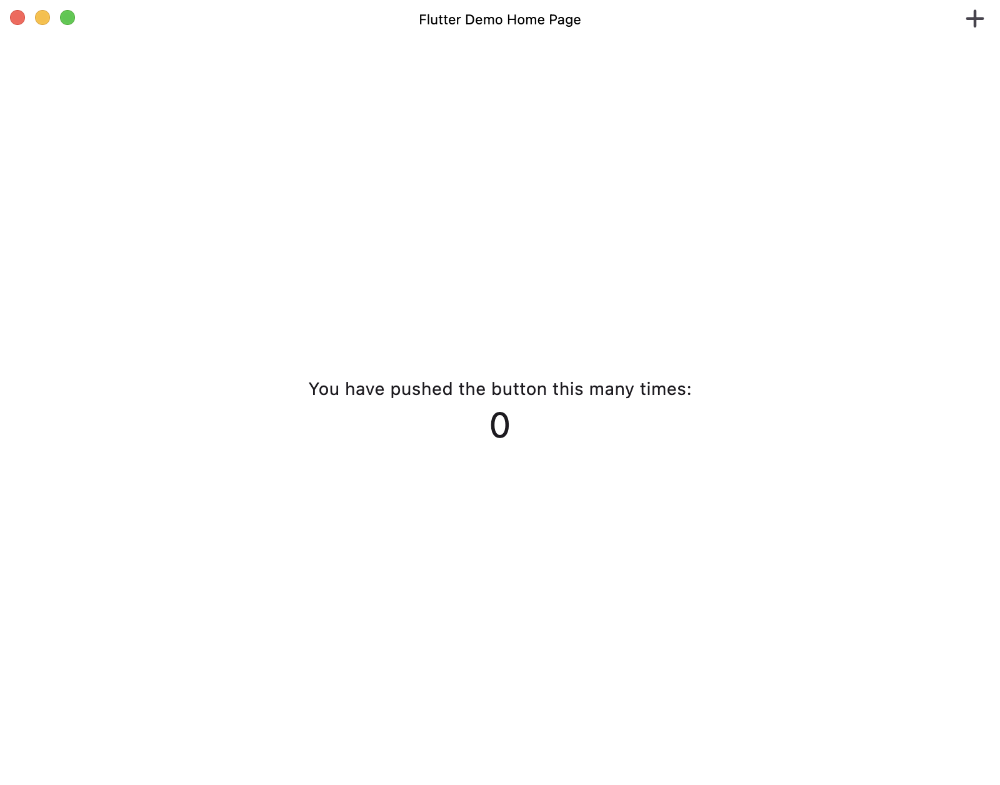

Making a Flutter Mac App Look More Native
June 28, 2025Flutter, by default, uses Material widgets, and Material Design has a different logic and style compared to Apple's Cupertino design. For comparison, here's what a boilerplate Flutter Mac app looks like:
You can change the widgets, of course, but the app still looks quite different from what Mac users are used to:


So what can we do to change this? Well, there are a few options:
Using a package
You can use a package like macos_ui, but it comes with several disadvantages. First of all, relying on such a package means your app's UI is tied to third-party code. This limits your control over both the package and your app's UI design.Furthermore, macOS UI is constantly evolving. Just a week ago, Apple released macOS Tahoe, which introduced a new aesthetic compared to the previous version. If you had built your app with this package, you might now find the UI outdated and no longer aligned with Apple's design language.
Manually styling the entire app
You could manually style every part of the app to better match the macOS design language, but this would be very time-consuming and impractical. The problem of fluidity of design languages still persists with this option, because if Apple were to release another UI update (which they will, eventually), you'd have to restyle every component all over again.So then, what should we do? Here's my solution:
Something in between
Don't use a third-party package, but don't spend too much time copying MacOS UI either. There are a few simple things you can do that makes the app less strange. Not totally native, but less strange. Let's start by changing the app bar and some colors.As you may have noticed, there is a slight purple tint as the background color in our Flutter app. Let's change that. Update your main.dart file per following:
Now, our app looks like this:

Hang in there, we have a few more things to do.
The next step is to tap into Xcode for some native adjustments. Open the macos folder in Xcode and make these changes:
Now, our app looks like this:

We're getting closer. Lastly, we will move the floating aciton button to the title bar. Make these changes to your code:
Now, our app looks like this: 
Here is a before and after comparison:
We've accomplished to make our app look much more native with a few simple tricks.
Happy coding!